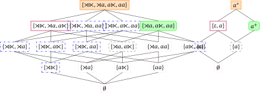

The lattice space of \(n\)-gram grammars
Required: - posets (semilattices)
Suggested: - sets (powerset) - general (fixpoint) - general (logarithm)
The general take-home message of this chapter has been that a surprising number of seemingly unrelated language universals can be stated as monotonicity properties over ordered sets. This includes both substantive universals (\(^*\)ABA, PCC) and formal universals (adjunct island constraint). But monotonicity is even more general. We conclude our journey with a brief look at how language acquisition might be informed by monotonicity, too.
SL and learning
Alright, time to rack your brain: do you still remember what a negative strictly \(n\)-local (SL-\(n\)) grammar is? It’s a finite set of \(n\)-grams such that a string is well-formed iff it does not contain any of the \(n\)-grams as a substring (after adding \(n-1\) instances of ⋊ and ⋉ on each side of the string). A positive strictly \(n\)-local grammar is the counterpart where a string may only consist of \(n\)-grams that are allowed by the grammar. Every negative SL grammar can be translated into a positive one, and the other way round.
As a reminder for yourself, write down an SL grammar for an attested linguistic phenomenon. A simple option is word-final devoicing or intervocalic voicing, but feel free to mix it up a bit.
Suppose we have a phenomenon that is SL. Then of course we can write an SL grammar for it. But how exactly do we come up with the grammar? And more generally, how can this phenomenon be acquired? Is there some algorithm that a child might use to identify the correct grammar for an SL process?
Depending on your background, you might wonder why anybody would care how children find the right grammar for their language. As long as they actually do it and learn the grammar, everything’s fine and we don’t need to worry about this. But learning is in fact the most important question of linguistics because it is, to put it bluntly, a freaking miracle. Languages are very complex systems, yet children master them effortlessly without explicit instruction and with very little data. Think back to the unit on negative polarity items and ever. Unless you had prior linguistic training, you were completely unaware of the laws that govern the use of ever, yet you’ve obeyed them your whole life. If we look at the sentences that children hear around them while growing up, ever isn’t all that common. There isn’t millions of sentences with ever that the child could study in order to figure out how those negative polarity items work. The child takes the astonishingly little data it gets and still solves the problem almost effortlessly. We have no idea how children do this — it truly is a miracle.
Learning is also of supreme importance for practical applications, e.g. voice recognition or machine translation. Computational linguists do not design those systems by hand. That would be an impossible task. It is sometimes done for very small and specialized domains like reading out numbers (\(1729\) as a year is seventeen hundred twenty nine, but as a phone number it is one seven two nine). But in general grammars are learned automatically from an enormous collection of data, which is also called a corpus. The process of inducing a grammar or model from a corpus is called machine learning or grammatical inference. Needless to say, grammatical inference is impossible without a learning algorithm.
So whether you care about the mysteries of the human mind or just want to see better closed captioning on Youtube, learning is extremely important. It is also a huge and very demanding research area. The learning algorithm for SL is very simple but also pretty clever. That makes it a good sneak peek of what the field of grammatical inference is like.
Learning by memorization
Let’s conduct a thought experiment. Suppose that you have to learn the phonotactics of a new language (recall that phonotactics is the collection of rules and laws that govern the distribution of sounds). The only thing you are told about the language is that its phonotactics are at most strictly \(3\)-local. The rest you have to figure out from the data, which is a never-ending stream of well-formed examples, one after the other. How could you do this?
Well, I don’t know how you’re going to approach it, but here’s my strategy, which is guaranteed to work. First, since the phonotactics are at most strictly \(3\)-local, I will assume that they are exactly strictly \(3\)-local, no more, no less. I am allowed to do that because every strictly \(n\)-local language is also strictly \((n+1)\)-local, so even if the language is in fact strictly \(1\)-local or strictly \(2\)-local, it doesn’t hurt me to assume that it is strictly \(3\)-local. Next, I will use the fact that every strictly \(3\)-local language can be described by a positive SL-\(3\) grammar, which is a finite set of allowed trigrams. This means that I only have to figure out what this finite set of allowed trigrams is. And that is easy: I look at every example string and memorize which trigrams occur in it. Since there can be only finitely many allowed trigrams, eventually I will have seen all of them, and at that point I have learned the phonotactics of the language.
Suppose that we have to learn the (infinite) SL-\(2\) language of all strings that start with either \(a\) or \(b\) and where \(a\) and \(b\) have to alternate. This language contains the following strings, starting from the shortest:
- \(\mathit{a}\)
- \(\mathit{b}\)
- \(\mathit{ab}\)
- \(\mathit{ba}\)
- \(\mathit{aba}\)
- \(\mathit{bab}\)
- \(\mathit{abab}\)
- \(\mathit{baba}\)
- \(\mathit{ababab}\)
- \(\mathit{bababa}\)
- and so on
Just so we’re on the same page, here’s the positive SL-\(2\) grammar that generates this language. The grammar uses an extended alphabet with \(\$\) as the edge marker.
- \(\mathit{{\rtimes}a}\)
- \(\mathit{{\rtimes}b}\)
- \(\mathit{ab}\)
- \(\mathit{ba}\)
- \(\mathit{a{\ltimes}}\)
- \(\mathit{b{\ltimes}}\)
- and so on
That’s the grammar we want to learn from the examples.
Now assume that the first example we get to look at is \(\mathit{ab}\). We extract all the bigrams, giving us a short list of allowed bigrams.
- \(\mathit{{\rtimes}a}\)
- \(\mathit{ab}\)
- \(\mathit{b{\ltimes}}\)
This grammar can only generate one string, namely the example \(\mathit{ab}\) that we derived it from. That’s not particularly interesting, we’ve looked at one well-formed example and have constructed a grammar that only allows for this one example.
Well, let’s look at the next example. Let’s assume that it is \(\mathit{baba}\). Once again we extract the bigrams and add them to what we have so far, giving us the list below.
- \(\mathit{{\rtimes}a}\)
- \(\mathit{{\rtimes}b}\)
- \(\mathit{ab}\)
- \(\mathit{ba}\)
- \(\mathit{a{\ltimes}}\)
- \(\mathit{b{\ltimes}}\)
Lo and behold, it’s the grammar for the target language. Two examples were enough to learn the whole infinite set of well-formed strings!
Suppose that you have the SL-\(3\) language \((\mathit{aba})^+\), which contains \(\mathit{aba}\), \(\mathit{abaaba}\), \(\mathit{abaabaaba}\), and so on. Write down the positive trigram grammar for this language. Then write down a single example from which one can immediately infer the whole grammar.
As you can see, learning SL-\(n\) languages is easy as long as there is a fixed upper bound on the value of \(n\). In that case, we simply memorize all \(n\)-grams we encounter in the examples, and eventually we will have seen all well-formed \(n\)-grams. At that point, we have learned the language.
Note that this learning algorithm won’t be aware of the fact that it has found the target grammar. Even if it already has the correct grammar, it will continue to extract \(n\)-grams from example strings and add them to the grammar. The difference is that this will no longer change the grammar. In mathematical terms, the learner has reached a fixpoint. An outside observers who knows what the target language should be can tell that nothing will ever change, but the learning algorithm itself has no knowledge. We could supplement it with some additional heuristics, e.g. that learning should stop after 1 million steps that haven’t changed the grammar. But this is orthogonal to our issue, which is how one can learn SL-\(n\) languages, even infinite ones, from a finite sample of data.
But hold on a second, how many examples do we actually need to look at? In the toy examples above one or two strings were enough, but those are toy examples. Maybe real languages require us to see trillions of strings, in which case our learning strategy would be completely useless in practice. In order for a learning algorithm to perform well, it should work with as little data as possible. So let’s do some calculations.
Learning efficiency and the grammar lattice
At first glance, you might think that the math looks pretty bad for learning SL languages. Let’s consider the problem of learning a specific SL-\(5\) language \(L\) over an alphabet of about 50 symbols. This is realistic for the phonotactics of natural languages, where at least some processes are SL-\(4\) or SL-\(5\), and many languages have 50 to 100 different sounds. With 50 symbols, there are \(50^5\) different \(5\)-grams (the maximum grammar size grows polynomially with the alphabet and exponentially with \(n\)). That’s \(312,500,000\) different \(n\)-grams. Okay, that’s big.
But the number absolutely pales in comparison to the number of possible \(5\)-grams grammars, which is \(2^{312,500,000}\). Why is that the number? Because for each \(n\)-gram, a grammar may either contain it or not, so each grammar is the result of \(312,500,000\) binary decisions. The overall decision space, then, must contain \(2^{312,500,000}\) options, each one a distinct grammar. That is one giant space.
The number is so large we would need a new word to describe it adequately. It is greater than the number of seconds since the Big Bang. If you were given \(2^{312,500,000}\) sheets of paper and stack them on top of each other to build a paper tower from your home town to the sun, you would still be left with 99,99999% of the paper afterwards. Whatever you think is a large number, it isn’t even a drop in the ocean compared to \(2^{312,500,000}\). If you got yourself an old Texas Instrument calculator and asked it to calculate \(2^{312,500,000}\), it would suddenly become self-aware and tell you to quit fooling around. And among those \(2^{312,500,000}\) grammars, we have to find one for \(L\). Talk about looking for a needle in a haystack.
But the learning procedure I sketched above is actually much smarter than this. It never looks at all possible grammars, it just keeps track of \(n\)-grams, and that greatly cuts down the space of options. To see why, we will have to look at the structure of the space of possible grammars. As it turns out, this is a very peculiar structure for \(n\)-gram grammars.
Given a fixed value for \(n\), we can look at the set of all possible positive \(n\)-gram grammars. Let’s call this set \(\mathcal{G}\). As we just saw, \(\mathcal{G}\) can be huge, but it will always be finite. Since each \(n\)-gram grammar is itself a set, we can order the set of \(n\)-gram grammars by the subset relation. This gives us a poset, which we will refer to by \(\mathbb{G}\).
Suppose \(n = 2\) and our alphabet \(\Sigma\) contains only \(a\). We add the edge marker to \(\Sigma\) to give us the extended alphabet \(\Sigma_E\). Ignoring bigrams where the edge markers are placed in a nonsensical manner, there are 16 distinct bigram grammars over \(\Sigma_E\).
- \(\emptyset\)
- \(\left \{ {\rtimes}{\ltimes} \right \}\)
- \(\left \{ {\rtimes}a \right \}\)
- \(\left \{ a{\ltimes} \right \}\)
- \(\left \{ aa \right \}\)
- \(\left \{ {\rtimes}{\ltimes}, {\rtimes}a \right \}\)
- \(\left \{ {\rtimes}{\ltimes}, a{\ltimes} \right \}\)
- \(\left \{ {\rtimes}{\ltimes}, aa \right \}\)
- \(\left \{ {\rtimes}a, a{\ltimes} \right \}\)
- \(\left \{ {\rtimes}a, aa \right \}\)
- \(\left \{ a{\ltimes}, aa \right \}\)
- \(\left \{ {\rtimes}{\ltimes}, {\rtimes}a, a{\ltimes} \right \}\)
- \(\left \{ {\rtimes}{\ltimes}, {\rtimes}a, aa \right \}\)
- \(\left \{ {\rtimes}{\ltimes}, a{\ltimes}, aa \right \}\)
- \(\left \{ {\rtimes}a, a{\ltimes}, aa \right \}\)
- \(\left \{ {\rtimes}{\ltimes}, {\rtimes}a, a{\ltimes}, aa \right \}\)
Ordering these sets by the subset relation \(\subseteq\) yields the following structure.
The structure in the above example is rather special. For any two grammars \(G_1\) and \(G_2\), there is a unique smallest grammar \(G_{1 \vee 2}\) such that \(G_1, G_2 \subseteq G_{1 \vee 2}\). Similarly, there’s also a unique largest grammar \(G_{1 \wedge 2}\) such that \(G_1, G_2 \supseteq G_{1 \wedge 2}\). In other words, \(\mathcal{G}\) is both a meet semilattice and a join semilattice. This makes \(\mathbb{G}\) a lattice.
Suppose \(G_1 \mathrel{\mathop:}=\left \{ {\rtimes}{\ltimes}, {\rtimes}a, aa \right \}\) and \(G_2 \mathrel{\mathop:}=\left \{ a{\ltimes} \right \}\). Compute \(G_{1 \wedge 2}\) and \(G_{1 \vee 2}\).
In fact, \(\mathbb{G}\) is a powerset lattice. The powerset of a set \(S\) is \(\wp(S) \mathrel{\mathop:}=\left \{ X \mid X \subseteq S \right \}\). In plain English, the powerset of \(S\) consists of all subsets of \(S\), including the empty set and \(S\) itself. The grammars we listed above are all subsets of \(\Sigma_E^2\). Therefore, \(\mathbb{G}\) is \(\wp(\Sigma_E^2)\), sorted by \(\subseteq\).
The learning algorithm effectively moves us upwards in the lattice. When our currently conjectured grammar is \(G_c\) and we get an example containing the \(n\)-grams \(\left \{ g_1, \ldots, g_m \right \}\), our new grammar is the union of the two. But this is exactly the same as taking the join of the two sets in the grammar lattice \(\mathbb{G}\).
Suppose that the lattice of grammars is as depicted above. Assume furthermore that the currently conjectured grammar is \(\left \{ {\rtimes}{\ltimes} \right \}\). The next example contains the bigrams \({\rtimes}a\) and \(a{\ltimes}\). Verify via calculation that \(\left \{ {\rtimes}{\ltimes} \right \} \cup \left \{ {\rtimes}a, a{\ltimes} \right \} = \left \{ {\rtimes}{\ltimes} \right \} \vee \left \{ {\rtimes}a, a{\ltimes} \right \}\).
Taking the join moves us upward in \(\mathbb{G}\) by 0 or more “levels”. Each level we move up, we get closer to a grammar that generates the target language that we are trying to learn. So for learning it doesn’t really matter how many elements the lattice has, what matters is how many levels it has. One step upward in a grammar lattice may rule out tons of grammars at once. Levels is where the action is. And the number of levels is a lot smaller.
The grammar lattice above has 16 grammars but only 5 levels. That is an exponential reduction is size.
Quite generally, a powerset lattice with \(n\) levels has \(2^{n-1}\) elements. Or the other way round, a powerset lattice with \(n\) elements has \(1 + \log_2 n\) levels, where \(\log_2\) is the base-2 logarithm. So we really don’t need to be worried about how many potential grammars there are, that’s not what matters. It’s much more important how many levels the corresponding powerset lattice has, and that number is exponentially smaller.
Great, so that’s out of the way — the overall size of the grammar space isn’t all that important, what matters is if the grammar space has a lattice structure with few levels. But there’s actually quite a bit more that we can learn from the grammar lattice, so let’s dive even deeper into it.
The lattice of SL languages
Each grammar \(G\) of \(\mathcal{G}\) generates a unique string language \(L(G)\). This language is just the set of strings that are well-formed with respect to \(G\). Let us call the set of all these languages \(\mathcal{L}\). More formally, \(\mathcal{L} \mathrel{\mathop:}=\left \{ L(G) \mid G \in \mathcal{G} \right \}\). Just like \(\mathcal{G}\), we can order \(\mathcal{L}\) by \(\subseteq\) to obtain a lattice \(\mathbb{L} \mathrel{\mathop:}=\left \langle \mathcal{L}, \subseteq \right \rangle\).
Recall that all grammars in \(\mathcal{G}\) are assumed to be positive. Then the languages generated by these grammars are as follows:
- \(L(\emptyset) = \emptyset\)
- \(L(\left \{ {\rtimes}{\ltimes} \right \}) = \left \{ \varepsilon \right \}\)
- \(L(\left \{ {\rtimes}a \right \}) = \emptyset\)
- \(L(\left \{ a{\ltimes} \right \}) = \emptyset\)
- \(L(\left \{ aa \right \}) = \emptyset\)
- \(L(\left \{ {\rtimes}{\ltimes}, {\rtimes}a \right \}) = \left \{ \varepsilon \right \}\)
- \(L(\left \{ {\rtimes}{\ltimes}, a{\ltimes} \right \}) = \left \{ \varepsilon \right \}\)
- \(L(\left \{ {\rtimes}{\ltimes}, aa \right \}) = \left \{ \varepsilon \right \}\)
- \(L(\left \{ {\rtimes}a, a{\ltimes} \right \}) = \left \{ a \right \}\)
- \(L(\left \{ {\rtimes}a, aa \right \}) = \emptyset\)
- \(L(\left \{ a{\ltimes}, aa \right \}) = \emptyset\)
- \(L(\left \{ {\rtimes}{\ltimes}, {\rtimes}a, a{\ltimes} \right \}) = \left \{ \varepsilon, a \right \}\)
- \(L(\left \{ {\rtimes}{\ltimes}, {\rtimes}a, aa \right \}) = \left \{ \varepsilon \right \}\)
- \(L(\left \{ {\rtimes}{\ltimes}, a{\ltimes}, aa \right \}) = \left \{ \varepsilon \right \}\)
- \(L(\left \{ {\rtimes}a, a{\ltimes}, aa \right \}) = \left \{ a, aa, aaa, \ldots \right \} = a^+\) (1 or more \(a\)s)
- \(L(\left \{ {\rtimes}{\ltimes}, {\rtimes}a, a{\ltimes}, aa \right \}) = \left \{ \varepsilon, a, aa, aaa, \ldots \right \} = a^*\) (0 or more \(a\)s)
Let us put the lattices from the two examples next to each other. We also add frames around nodes to indicate which grammar generates which language.

Notice anything special? Whenever two grammars stand in the subset relation, their languages do, too. That is to say, \(G \subseteq G'\) implies \(L(G) \subseteq L(G')\). Once again we’ve stumbled across monotonicity. The relation between grammars and their languages is order-preserving: move to a larger positive grammar, and you either get the same string language or a larger one. This monotonicity connection is what powers the \(n\)-gram memorization algorithm I sketched at the beginning of this unit.
Suppose that all members of \(\mathcal{G}\) are negative grammars. Draw the corresponding lattice of languages, and connect each grammar to its language with a colored line.
What is the relation between negative grammars and their languages? Is it still monotonic? If so, is it the same kind of monotonicity?
Monotonicity provides safe generalization
The learning algorithm I sketched starts out with an empty positive grammar, and after each example we enrich the grammars with all the \(n\)-grams that occurred in the example. We can look at this from the perspective of the grammar lattice \(\mathbb{G}\) and the language lattice \(\mathbb{L}\) to understand why the algorithm works. Keep in mind that the algorithm itself doesn’t work with those lattices. As you have seen, that could require building a ludicrously large lattice with \(2^{312,500,000}\) grammars, or even more than that. This is a purely mathematical exercise to understand how the algorithm works, not a claim about how the algorithm would actually be implemented on a computer.
Let us use \(g_n(s)\) to denote the set of \(n\)-grams of string \(s\). Then our learning algorithm for SL-\(n\) languages amounts to starting out with the assumption that \(G \mathrel{\mathop:}=\emptyset\) and then, after each example \(e\), redefining \(G\) as \(G \cup g_n(e)\). In the grammar lattice \(\mathbb{G}\), that’s the same as taking the join of \(G\) and \(g_n(e)\). But how can we be sure that this gives us the right grammar? Maybe \(G \cup g_n(e)\) gives a grammar \(G\) that undergenerates, which means that it can’t generate all strings in the target language. Or maybe it overgenerates, which means that it generates some strings that aren’t well-formed according to the language we’re trying to learn. Thanks to monotonicity, neither one is a problem.
The details are a little convoluted, so let’s focus just on the intuition. First of all, undergeneration is not an issue. The join operation moves us upwards in the grammar lattice \(\mathbb{G}\). By moving upward in the lattice, we will eventually reach a grammar that contains all the \(n\)-grams that are needed to generate every string in the target language \(L_t\). The only risk is that we might go too high and end up with a grammar that generates some proper superset of the target language \(L_t\). That would be overgeneration, and monotonicity tells us that this cannot happen. The join operation \(G_c \vee g_n(e)\) always gives us the least upper bound — it’s the shortest possible step given the new example \(e\). A minimal step up in the grammar lattice is also a minimal step up in the language lattice. If \(G_1 \subseteq G_2 \subseteq G_3\), then it must also be the case that \(L(G_1) \subseteq L(G_2) \subseteq L(G_3)\) because of monotonicity. As we grow the grammar, we grow the conjectured language. If all we get is examples from \(L(G_2)\), then we will slowly inch our way there with join operations and stop once we have reached a grammar that generates \(L(G_2)\). There simply is no way that a minimal step up from \(G_1\) will immediately propel us beyond \(L(G_2)\) to \(L(G_3)\). Minimal steps in the grammar lattice allow us to safely grow the language until we hit our target.
Without monotonicity, this wouldn’t be the case. Without monotonicity, it could be the case that \(G_1 \subseteq G_2 \subseteq G_3\) yet \(L(G_1) \subsetneq L(G_3) \subsetneq L(G_2)\), i.e. the grammar \(G_2\) is a subset of \(G_3\) yet the string language \(L(G_2)\) is a proper superset of \(L(G_3)\). This would be a big problem. Once we have a grammar that generates \(L(G_2)\), we cannot backtrack to \(L(G_3)\). That’s because we only get examples of which strings are well-formed, not which strings are ill-formed.
Suppose that you have already conjectured a grammar that generates \(a^+\). I now tell you that \(a\) is well-formed. This is perfectly compatible with your assumption that the target language is \(a^+\), but maybe it’s just \(\left \{ a \right \}\). Who knows?
You might say that this is a case of the proverbial mountain in labor. The learning algorithm at the beginning of this section was so simple that anybody could see right away that it works. But by analyzing it in terms of lattices, we have turned the SL learning algorithm into something more general. If you think about it, it doesn’t really matter what the nodes in the grammar lattice are. We only need four things:
- a lattice of all grammars, whatever they may look like,
- a lattice of languages, whatever they may look like,
- a monotonic mapping from the grammar lattice to the language lattice,
- a way of moving through the grammar lattice based on example strings from the target language.
This setup works for a lot more than just SL languages. For instance, we saw an extension of SL called TSL, and the same procedure works for those, although each one of those four components is more complicated. The mathematical perspective gives us a much deeper understanding of what aspects of SL languages matter for learning, and any other problem that exhibits the same properties can be tackled in a similar way.
Universals in learning
Let’s wrap up with one more conceptual remark, but this one is on language rather than the virtues of math. While simple, the SL learning algorithm is quite smart. We have seen that relations can order linguistic properties like first and second person, or they can even order the sentences of a language with the adjunct extension. Now we have seen that even grammars and languages can be ordered. The space of possible languages isn’t flat, it contains hidden structure, and this is what enables fast learning.
However, in order for this to work as desired, the learning algorithm needs to know the value for \(n\) in advance. This is not too much of a problem in practice as \(n\) can be approximated. Since \(n\)-grams can always be padded out to some higher value, we can set \(n\) to some safe upper bound like \(10\). For the vast majority of cases, that should work just fine. The downside of picking a large value for \(n\) is that the lattice becomes much bigger, which reduces the speed of the learning algorithm.
Suppose the target language is SL-4 but our learner assumes an SL-10 language. With just 10 alphabet symbols there are \(2^{10^{10}} = 2^{10,000,000,000}\) distinct SL-10 grammars. This is once again a huge number, but the grammar lattice reduces this to \(10,000,000,001\) levels. That’s much smaller than the full space, but not exactly small.
With 10 sounds and 4-grams, there are “only” \(2^{10^4} = 2^{10,000}\) distinct grammars. That’s still a mindboggingly large number, but remember that each update rules out a good chunk of those grammars. The number of levels in the grammar lattice will be \(10,001\), and that’s actually a tiny number as far as machine learning is concerned. So the learning algorithm can still converge fairly quickly on the correct grammar, assuming that it uses the smaller space of SL-\(4\) grammars.
Children presumably start out with some safe value \(n\) as a genetically encoded universal about the maximum complexity of languages. Perhaps, as they figure out more about the target language, they use some smart heuristics to reduce the size of the grammar lattice, which increases the speed of acquisition. It’s all speculation at this point, but clearly children have some kind of innate ability to learn language effortlessly. Our mathematical perspective provides some coarse insights into what the child needs to know in advance so that it can learn from the linguistic data in its environment.
Recap
Learning an SL-\(k\) language \(L\) is easy if we already know some upper bound \(n\) such that \(k \leq n\).
- Start out with an empty positive grammar \(G\) (i.e. the assumption that nothing is allowed).
- Given a string \(s\) from the target language, add all \(n\)-grams of \(s\) to \(G\).
- Keep doing this. Eventually you will reach a fixpoint where \(G\) no longer changes.
- At this point, it is guaranteed that \(L(G) = L\).
Even though the space of possible grammar is huge, learning can be fast because the space is highly structured.
Specifically, the space of \(n\)-gram grammars forms a powerset lattice.
A powerset lattice with \(n\) elements has \(1 + \log_2 n\) levels. Hence the number of levels is exponentially smaller than the whole powerset lattice. The learning algorithm moves from one level to the next, ruling out tons of grammars in one learning step. This keeps learning fast and efficient.
The class of SL-\(n\) languages also forms a lattice. The mapping from the grammar lattice to the language lattice is monotonic. This is what allows the learning algorithm to safely move from level to level, ignoring many grammars along the way.
The algorithm can be generalized to any class that can be characterized in terms of such lattices linked by a monotonic function.